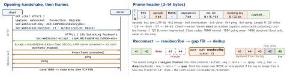

networking · folio
In one line: A WebSocket (RFC 6455) is an HTTP/1.1 request that upgrades (101) into a full-duplex stream of small frames on the same TCP connection. It gives foreground realtime; it does not give delivery across reconnects, ordering across connections, or life in the background — you build heartbeats, resubscribe, gap fill and dedup, and use APNs when the app is not running.
Download PDF Print view LaTeX source


Choosing the transport
| direction | latency | battery | infra / catch | |
|---|---|---|---|---|
| polling | pull | = interval | worst: radio per poll | plain HTTP, cacheable |
| long poll | pull, held | near real-time | a request per batch | held requests, timeouts |
| SSE | down only | real-time | one stream | auto-resume; proxies buffer |
| WebSocket | duplex | lowest | foreground only | LB: Upgrade + long idle |
| APNs | down | seconds, best-effort | best (system link) | throttled; 4 KB payload |
Pick the simplest that meets latency: a feed → SSE or polling; chat, collaboration, games → WebSocket; “tell me while I’m not running” → APNs.
How it works
- Auth happens at the handshake:
URLSessionWebSocketTasktakes aURLRequest, so setAuthorization(browsers can’t — they use a query token or a first message). After 101 there are no headers: an expired token needs an in-band re-auth or a reconnect. - Heartbeats: NATs silently drop idle mappings; a half-open socket looks open until a write fails, minutes later.
sendPingevery ∼20–30 s; no pong in time → dead, reconnect. App-level heartbeats also prove the server app lives. - Reconnect: exponential backoff + full jitter, reset after a stable period; also on
NWPathMonitor“satisfied” and on foreground. On open: auth → resubscribe (the new server knows nothing) → gap fill → flush outbox. - Ordering: TCP orders one connection only; across reconnects, servers and backplanes you need the server seq. Delivery is at-least-once → idempotent handlers, dedupe by message id.
- Background: iOS suspends the app seconds after it leaves; the socket dies with it. Close cleanly inside
beginBackgroundTask; deliver via APNs; reconnect + gap fill on foreground. (PushKit VoIP is for calls only.)
Example — URLSessionWebSocketTask (iOS 13)
var req = URLRequest(url: URL(string: "wss://api.example.com/ws")!)
req.setValue("Bearer \(token)", forHTTPHeaderField: "Authorization")
let ws = session.webSocketTask(with: req)
ws.resume()
try await ws.send(.string(#"{"op":"sub","ch":"room.7","since":42}"#))
while true { // receive() = ONE message
switch try await ws.receive() { // throws when it closes
case .string(let s): handle(s)
case .data(let d): handle(d)
@unknown default: break
}
}
// heartbeat timer: ws.sendPing { error in /* nil = pong */ }
// leaving: ws.cancel(with: .goingAway, reason: nil)Server side — fan-out
Sockets are stateful: each gateway holds its connections in memory. A message published anywhere must reach sockets on every gateway → a pub/sub backplane (Redis pub/sub, NATS, Kafka, an MQTT broker): gateways subscribe to the channels their clients want and push down the sockets. The WebSocket itself pins to one gateway, so stickiness only matters for multi-request fallbacks (long polling). Budget per-connection memory; bound each client’s send buffer — a slow consumer gets dropped, not buffered forever. A deploy closes thousands of sockets at once: send close 1001, drain, and rely on client jitter to avoid a reconnect storm.
MQTT over WebSocket
MQTT packets carried in binary frames (Sec-WebSocket-Protocol: mqtt): browsers can’t open raw TCP, and some networks allow only 443. You get topics + wildcards, QoS 0/1/2 (QoS 1 = duplicates → idempotent), retained last value, Last Will — the reconnect/state problems above, already solved by the broker. A native iOS client can use MQTT over TLS directly.
Traps
- Not re-arming
receive()(completion API): one message, then silence. - “The socket is open, so the peer is alive” — half-open TCP. Heartbeat with a timeout.
- Reconnect without resubscribe +
since: connected, and silently missing messages. - Fixed-delay reconnect: every client returns in the same second after a server blip.
- Keeping a socket in the background “with a background mode”: not allowed for this — push.
Sec-WebSocket-Acceptis not security; auth the handshake, usewss://(TLS).- Default
maximumMessageSizeis 1 MB(unverified) — a bigger message fails the receive.